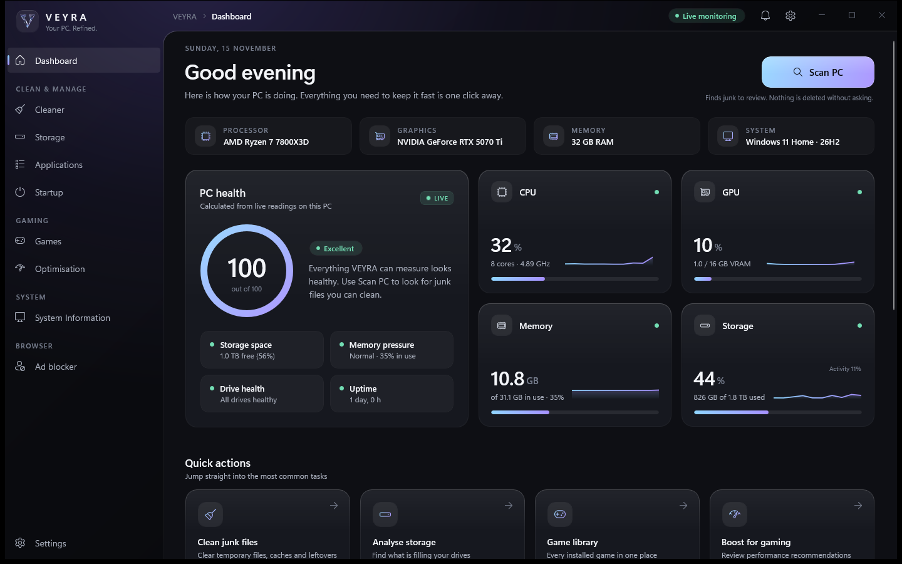
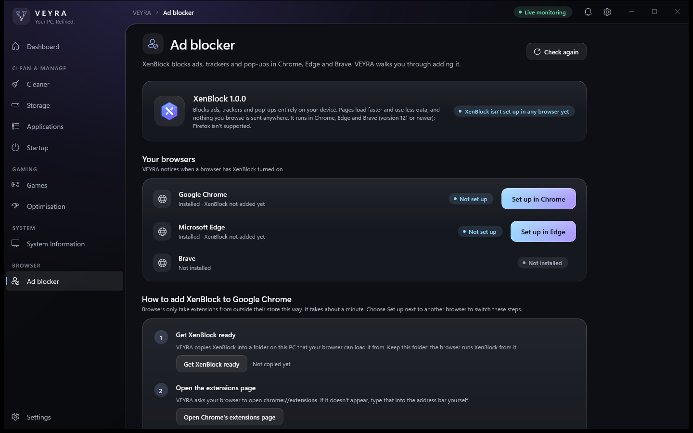
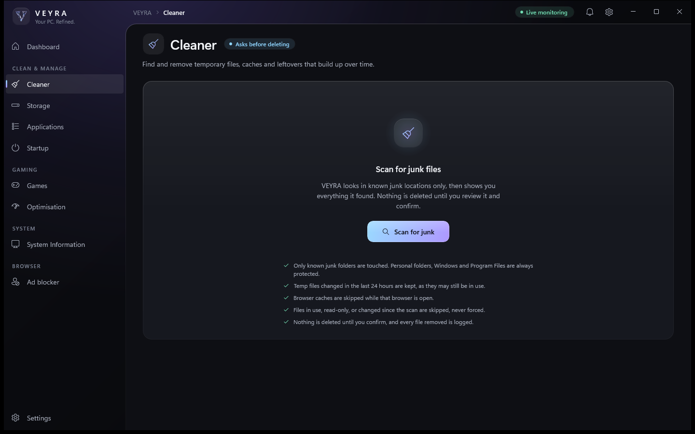

Dashboard
A live health score with processor, graphics, memory and storage readings, updated every second.
Free for Windows 10 and 11
VEYRA cleans, manages and tunes your gaming PC, then tells you exactly what slowed your last game down. Every change is explained first, and nothing happens without your say-so.

Everything in one place
Every module works with real readings from your PC. No fake scores, no scare tactics, no "123 problems found".
A live health score with processor, graphics, memory and storage readings, updated every second.
Finds temporary files, caches and leftovers in known junk folders only. You review everything before anything is removed.
See what fills your drives by category, drill into the largest folders and spot the biggest files.
Every installed app with its real size and publisher. Uninstalls run the app's own uninstaller, and leftovers are pointed out.
See what starts when you sign in and how heavy it is. Turn entries off the same safe way Task Manager does.
Steam, Epic, Xbox, Riot, Battle.net, Ubisoft, EA and GOG in one library with official artwork and a Play button.
Seven clearly explained, reversible Windows tweaks, plus profiles and background-app controls. Undo any of them in one click.
Catches the things that quietly cost you frames: a slow refresh rate, memory below its rated speed, a graphics card in the wrong slot.
Runs quietly in the background while you play, then shows what slowed your game down.
XenBlock blocks ads, trackers and pop-ups in Chrome, Edge and Brave. VEYRA walks you through adding it.
Processor, graphics, memory modules, motherboard, BIOS and drives, all in one tidy page.
Starts with Windows if you want it to and waits in the system tray. Close the window and it keeps watching your game sessions.
Game sessions
VEYRA notices when you start a game from your library. When you close it, you get a plain-English report.
Read-only: nothing is changed while you play. Checking for games takes under a millisecond every five seconds.
Averages: Processor 58% · Graphics 96% · GPU peak 74 °C · Memory peak 71%
PC Checkup
Most gaming PCs leave performance on the table without anyone noticing. PC Checkup looks for the usual suspects, and fixes what Windows allows, only after you confirm.
Ad blocker included
VEYRA comes with XenBlock, an ad, tracker and pop-up blocker that works entirely on your device. Browsers only accept extensions from outside their store one way, so VEYRA walks you through it step by step:
Works in Chrome, Edge and Brave (version 121 or newer). Firefox isn't supported.

Built to be trusted
Most "PC optimisers" delete first and explain never. VEYRA works the other way round.
Every change says what it does, why it helps and what the trade-off is. Then you decide.
Original settings are backed up before VEYRA touches them, so every tweak can be put back exactly.
No account, no telemetry, no ads. VEYRA's own files live in one folder on your PC.
Hidden in the tray it uses 0.008% of your processor and about 17 MB of memory. Settings › About shows its live usage.
The Cleaner only scans known junk folders and asks before anything is removed.

Free download
One installer with everything included. No .NET or extra runtimes needed.
32695BAAC6F97902CCB110EAC5A95BA6FCA1886083F7B93BE97DCF2535BE6A12
Questions
Yes. No trial, no "pro" upgrade nagging, no ads and no account.
The installer isn't code-signed yet, so Windows SmartScreen doesn't recognise the publisher. Choose More info, then Run anyway. You can check the file against the SHA-256 checksum above.
Not without you. The Cleaner only looks in known junk folders and shows everything before deleting. Every optimiser tweak is explained, confirmed and backed up first, so it can be undone. PC Checkup's refresh-rate fix switches back by itself unless you keep it.
No. Hidden in the tray, VEYRA uses about 0.008% of your processor. While you play it takes a lightweight reading every five seconds and changes nothing.
Download the newest installer from this page and run it. It upgrades VEYRA in place and keeps your settings and history.
Not yet. XenBlock is built for Chromium browsers: Chrome, Edge and Brave, version 121 or newer.
Windows Settings › Apps › Installed apps › VEYRA › Uninstall. If you changed settings with the optimiser, undo them in VEYRA first.